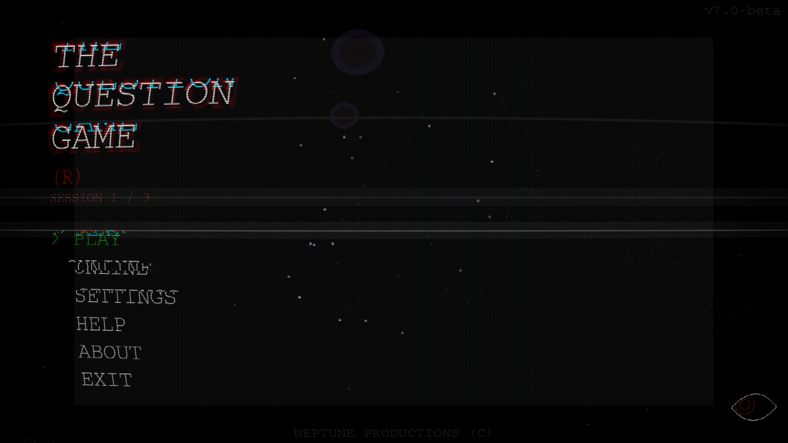
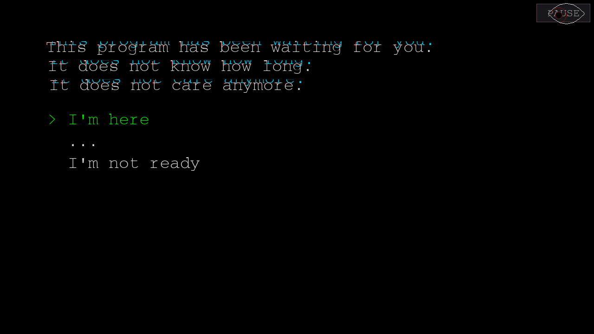
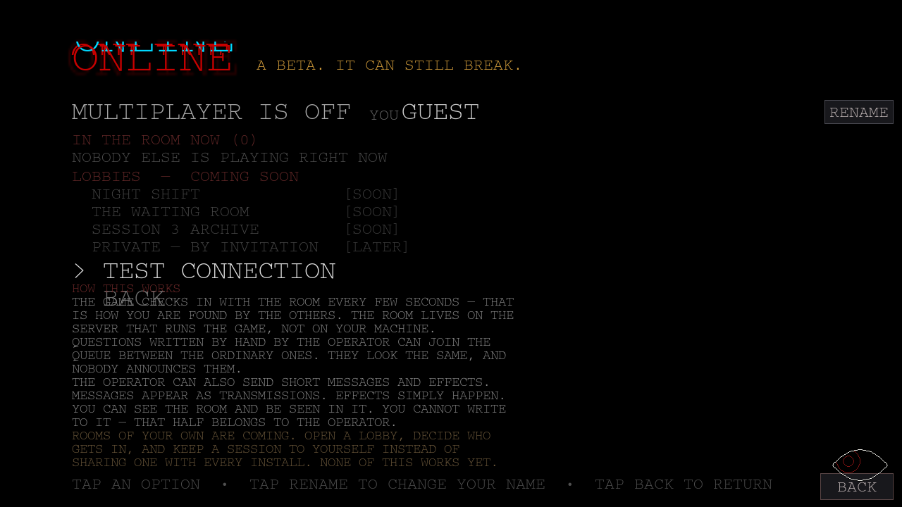
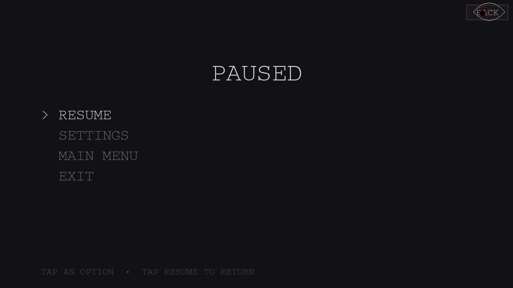
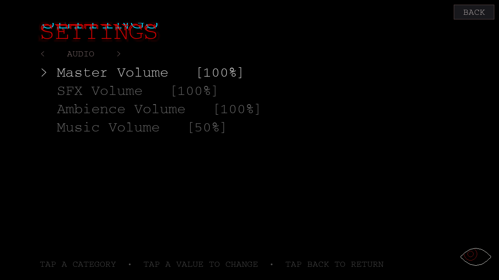
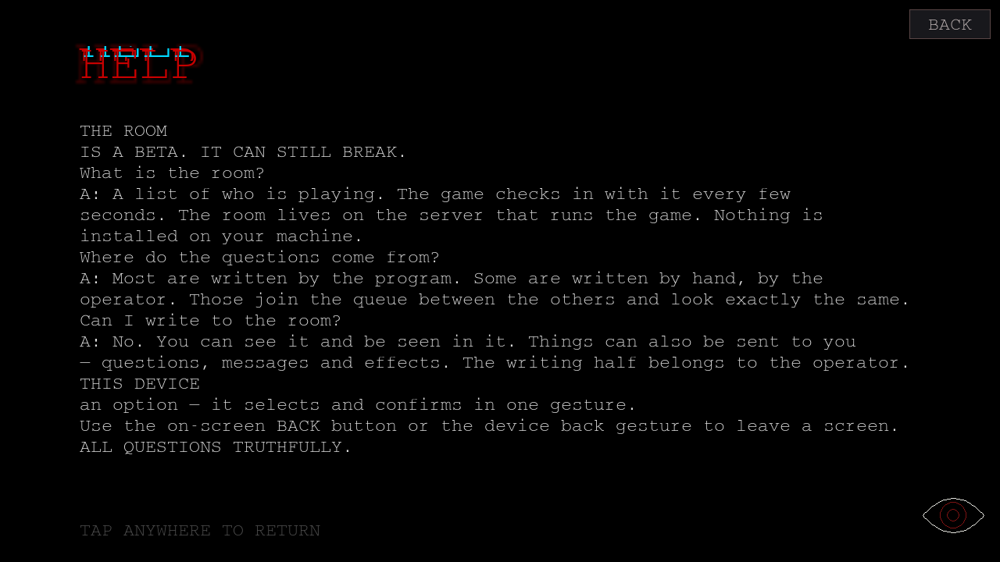

The Question Game Remastered is a psychological horror experience built around a simple premise:
Answer a series of questions.
It remembers.
Three runs. Twenty-two, thirty-two and forty-six questions. At first they seem ordinary — questions about you, your habits, your preferences, your surroundings. But every answer changes what comes next, and the game keeps the answers between runs.
Then the game begins remembering.
It notices contradictions.
It references previous answers.
It reacts differently on later playthroughs.
Sometimes it appears to know more than it should.
Questions can be generated live by an AI relay from your answers and your approximate location. The further you get, the less it feels like a quiz and the more it feels like something is on the other side of the screen.
Choose your platform:
On Android, download the APK, open it, allow Install unknown apps for the app you downloaded with when prompted, then tap the file. No account, no root, no installer. Desktop builds are archives — extract them before running.

On a computer the game uses the whole machine as part of the prank. Windows shake and get out of the way. A stolen cursor refuses to sit still. The wallpaper changes. A fake antivirus scan finds three threats and removes two. A blue screen, an administrator console typing on its own, a list of real filenames from your Desktop and Downloads, a sign-in alert for a device that was never you.

None of it is real. It is theatre, and every piece of it can be switched off in Settings.

The desktop tricks change shape instead of disappearing. Window shakes become screen shakes. A stolen cursor becomes your answer selection moving by itself. Wallpaper changes become corruption and flicker. The watching eye follows what you highlight, including on touch.

The phone build defaults to Low mode: 30 fps, no gallery or process scanning, cached text rendering and a cheaper scaler. It keeps the touch controls and the visible PAUSE button, and runs about four times faster than the first port.


Desktop: choose answers with the mouse or number keys, confirm with Enter, and use Esc for the pause menu. Keys can be rebound in Settings.
Android: tap an answer, tap a menu row, use the system Back button to leave a screen, and the visible PAUSE button while playing. The game runs in landscape and keeps the screen awake.




The phone and desktop builds connect to the same room. Join it and your name appears in the online list. Questions, effects and messages can arrive there while you play, and you answer them the same way as any other question.
Internet is optional. With no connection, the game falls back to a built-in bank of questions and plays through normally. With a connection, questions come from an AI relay; your approximate location is inferred from your IP so the questions can use it. The room is memory-only — nothing is stored server-side after you leave.
Players can only receive and answer. Sending questions is not part of the player download; that side stays on the operator's own machine and is not shipped here. No token or credential is included in the game.
This game contains psychological horror, unsettling imagery, jump scares, flashing visual effects, sudden loud sounds, themes of surveillance and paranoia, and moments designed to create discomfort. Photosensitivity switches are in Settings. Intended for players 18 and over.
This is a game, not malware. The horror is fiction. The game does not hide itself, steal your data, need root, or install anything. Answers are remembered locally on your device. The online room is optional and memory-only; when you use it, your IP is used to infer an approximate location for question generation and nothing is retained after you leave. The Android build declares the camera permission but never opens the camera — webcam scares are visual effects instead.
By downloading, installing, or playing The Question Game Remastered, you understand that the game contains psychological horror elements, fourth-wall-breaking content, simulated surveillance themes, webcam-related visual effects, wallpaper modifications, and other effects intended solely for entertainment purposes.
You acknowledge that these features are part of the game's design and consent to their use while playing. Nothing the game pretends to do to your machine is real.
If you do not agree with these terms, do not download or run the game.
Full source, the rest of the archive, and the release notes: the project site · the GitHub repository